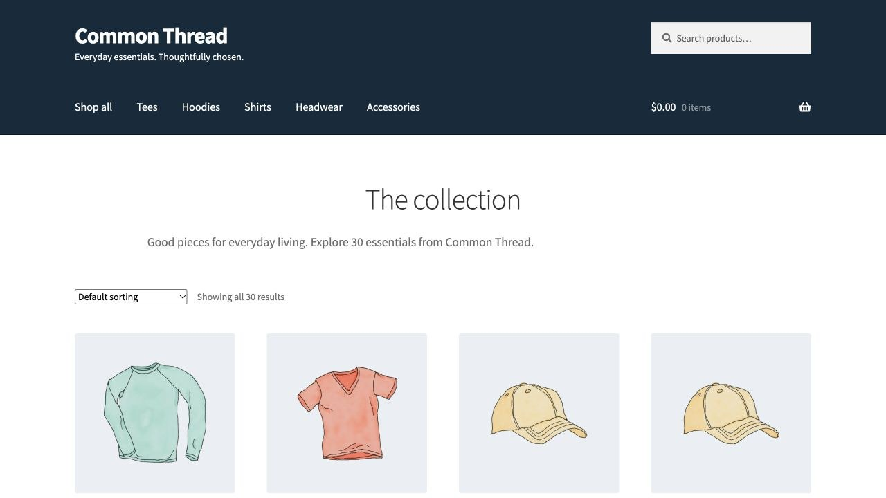
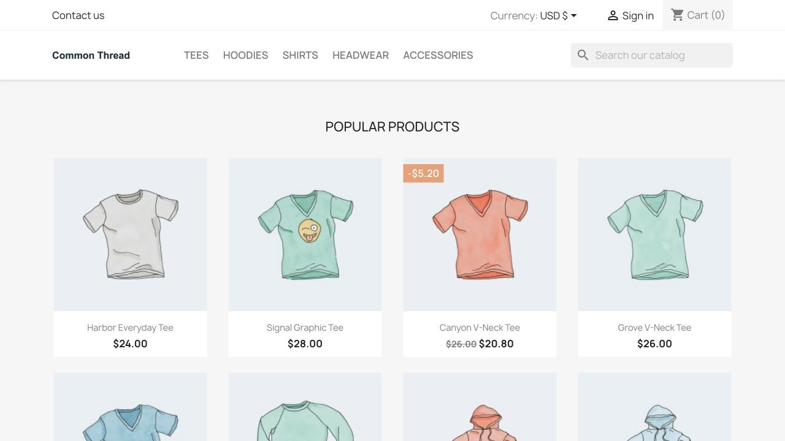
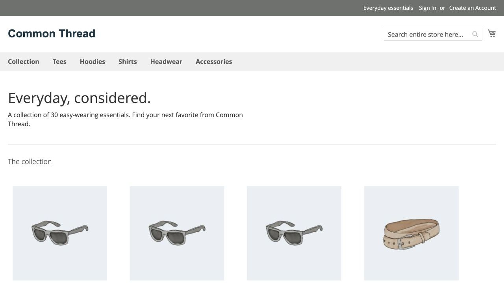
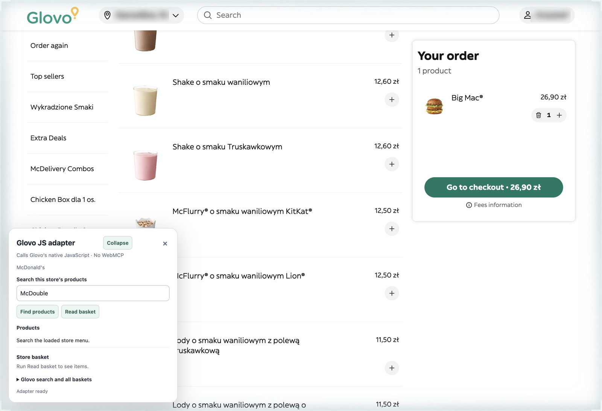
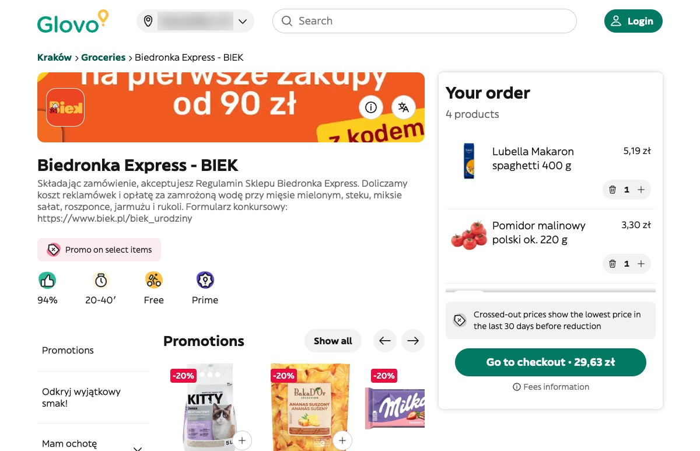

Three experiments in agent commerce
Common Thread
October 2026
Experiment
01
Experiment 01



Same 530 products in each store
03
Experiment 01 · Results
Plain browsing
With shopping.js
Average per run
Tokens
4.3×
fewer
3.32M
0.77M
Time
2.1×
faster
260 s
125 s
Browser actions
7.2×
fewer
72
10
30 fresh sessions · gpt-6-luna, medium · 530-product WooCommerce store · Oct 6, 2026
04
Experiment 01 · Every run
Plain browsing · 3 runs
mean 3.32M
With shopping.js · 27 runs
dashed line = mean 0.77M
0
1M
2M
3M
4M
5M tokens
Total tokens per session
05
Experiment
02
Experiment 02

1
2
1
2
McDonald's Kraków on glovoapp.com
07
Experiment 02
Real Glovo screenshots · finish times are benchmark means · pacing illustrative
08
Experiment 02 · Results
Plain browsing
With glovo.js
Mean per run
Time
3.6×
faster
293 s
82 s
Tokens
4.5×
fewer
2.56M
0.56M
Browser calls
3.7×
fewer
35.5
9.5
4 fresh sessions, 2 per condition · gpt-6-luna, xhigh · McDonald's Kraków · Oct 5, 2026
09
<script defer src="/shopping.js"></script>
Like Google Analytics.
No backend changes
11
Experiment
03
Experiment 03
01
02
03
04

Biedronka Express on Glovo Kraków
13
Experiment 03
You type
spaghetti
tuna
passata
Jev picks
Lubella Makaron spaghetti 400 g
Rio Mare Tuńczyk w sosie własnym 160 g
Gusto Bello Passata klasyczna 690 g
Basket
26,33 zł
Experiment 03
Total time
3.46 s
Jev · 2 requests
676 ms
Cost per basket
$0.000774
Jev · 676 ms
Glovo reads and writes · 2.78 s
Model cost as reported by the provider
15
Recap
01
4.3× fewer tokens
02
3.6× faster
03
Full shopping list done in 3.46 s
16